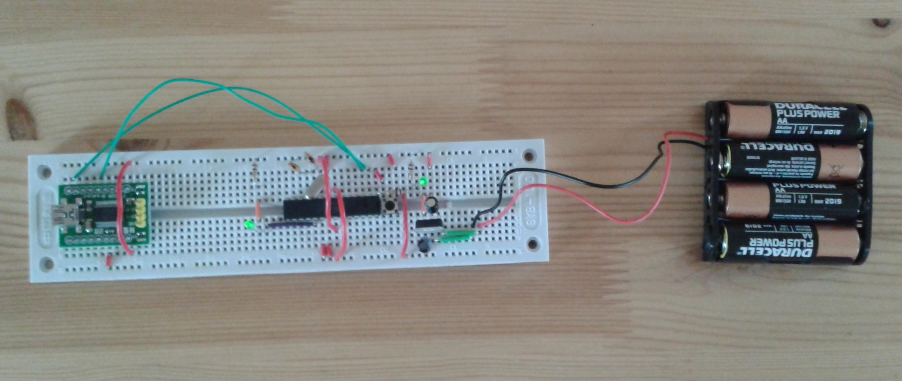

Low-power Arduino-on-a-breadboard
Putting an Arduino together from scratch lets us look at where the power consumption might be reduced -- and is just an interesting thing to do anyway.
One of the most exciting things about the Arduino is that it's open-source, so you can build them yourself -- and potentially vary the way they're put together for specific projects, which is very useful as a starting point for people (like me!) who aren't hardware engineers.
The main challenge for sensing with Arduinos seems to be their power consumption, and the obvious way to address this is to see whether there are things to be done to reduce the power drain, for example by addressing the issue of the quiescent current of the power regulator.
As a starting point, I used an on-line guide to build an Arduino on a breadboard:

Actually this isn't a "full" Arduino as the analogue to digital converter (ADC) isn't properly set up, but it has the basic components of microcontroller (the same ATmega 328P as on an Arduino Uno), LED, reset switch, power, and USB. The breakout board at the left-hand side is the USB adapter, while the cluster of components on the right is the power regulator. At present I'm powering from batteries; one can also power from the USB, or from a wall power supply via another breakout board, but this way allows the same power measurement regime as earlier.
Measuring power for a simple "blink" program gives the following result:
| Activity | Power mode | Current |
| Nothing | Deep sleep | 4.5mA |
| Flashing LED | Awake | 17mA |
So in deep sleep mode the system draws about a seventh the power as a "real" Arduino. This is all down to the choice of voltage regulator: an L7805 with a design maximum quiescent current of 6mA. To put this into perspective, a system that could last a week on a standard Arduino board would last the best part of two months in this configuration. Put another way, we can build a sensor mote with an Arduino architecture and dramatically increased lifetime by changing a core component and using SleepySketch to keep the system asleep by default.